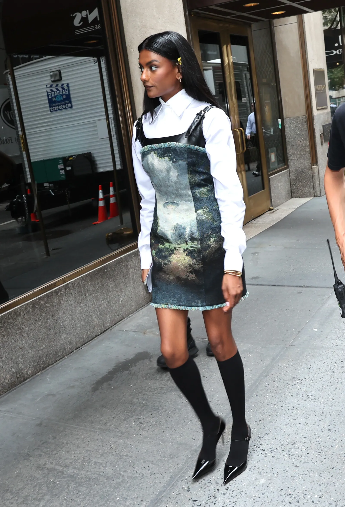
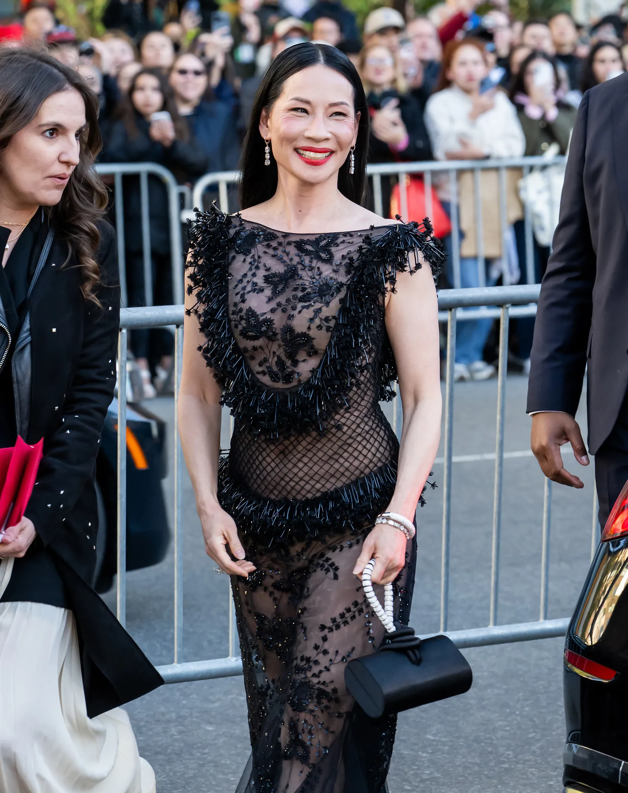
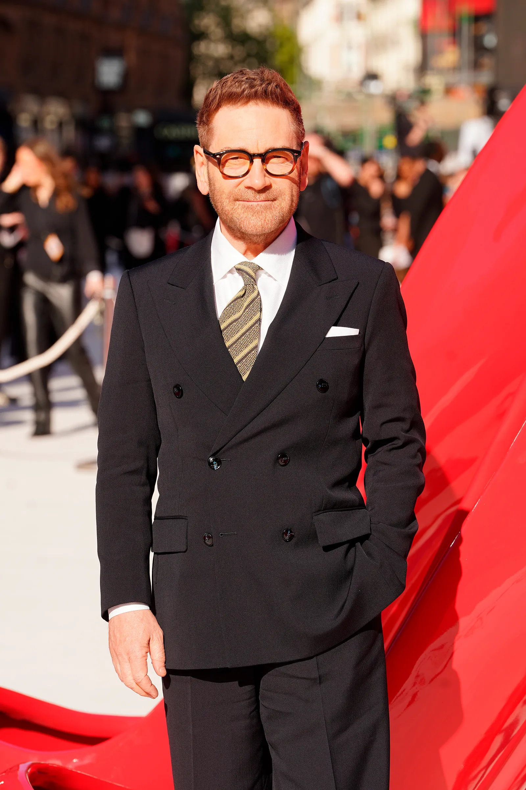
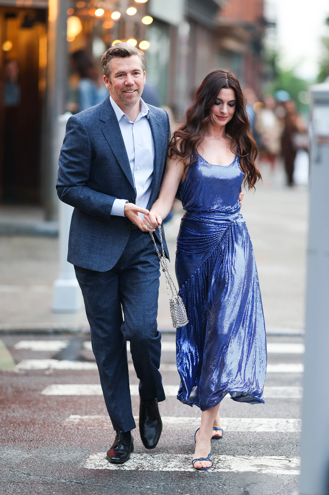
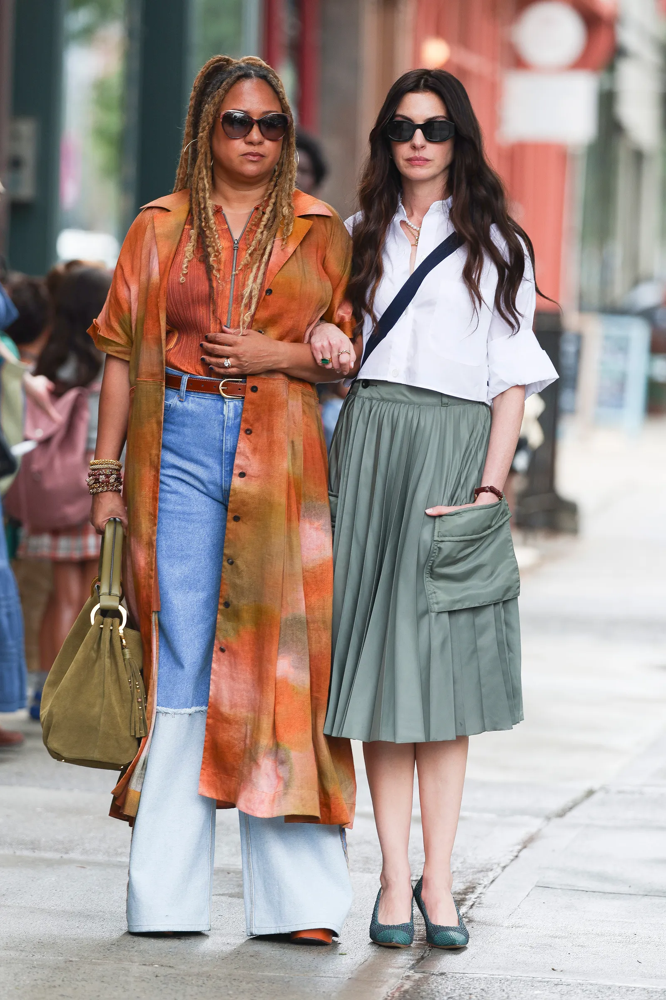
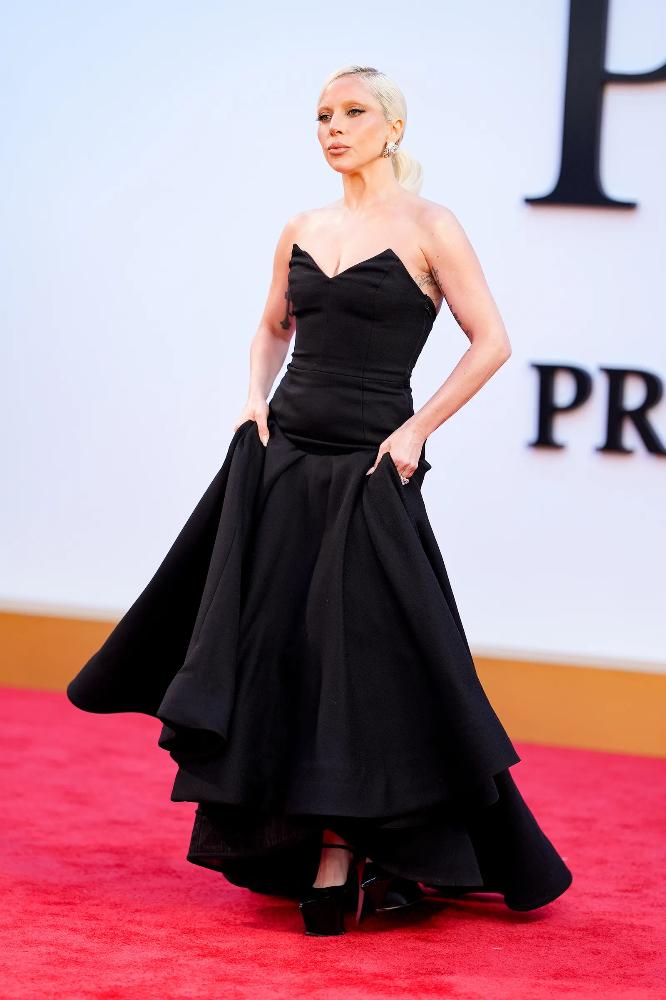
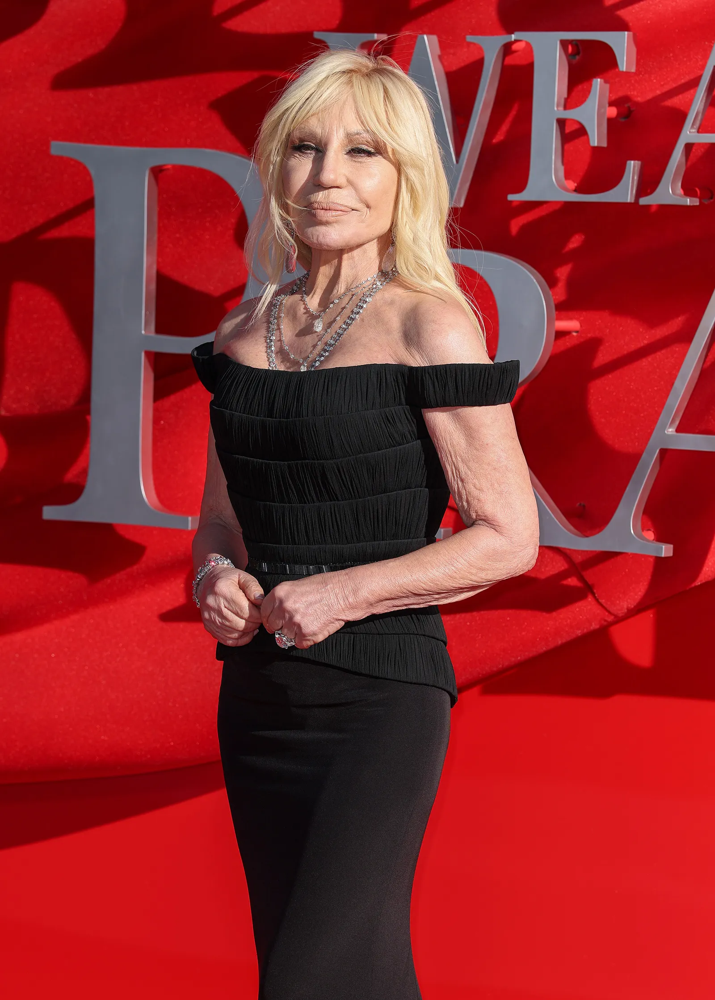
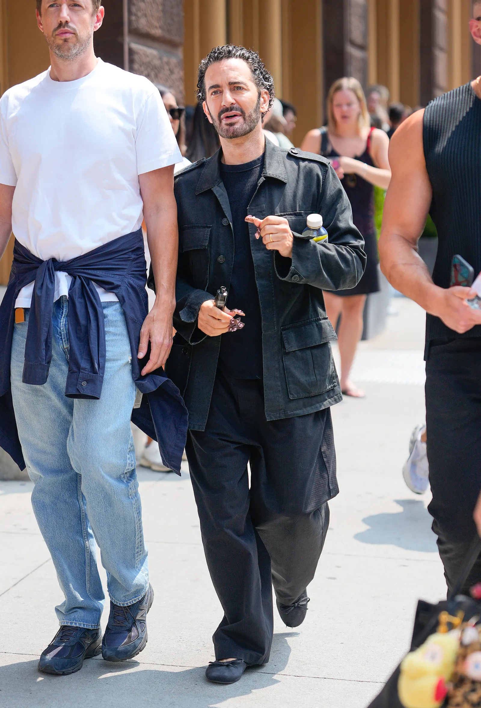

Meryl Streep
Miranda PriestlyRegresa a su papel como Miranda Priestly, la temida editora en jefe de Runway. En esta secuela, Miranda se enfrenta a los cambios del mundo editorial mientras lucha por adaptarse al entorno digital.
Regresa a su papel como Miranda Priestly, la temida editora en jefe de Runway. En esta secuela, Miranda se enfrenta a los cambios del mundo editorial mientras lucha por adaptarse al entorno digital.

Acompañamos el viaje de Andy tras dejar Runway. En esta segunda parte, finalmente sabremos el rumbo que tomó su vida tras dejar de lado el sueño de todo aficionado de la moda.

Emily vive por la moda. En esta segunda parte, competirá con rivales inesperados en una nueva etapa de su carrera y podría ser la persona que Miranda necesita para salvar a Runway.

Anteriormente el director de moda en Runway y aliado clave de Andy. En esta secuela, acompaña a Miranda y Andrea en un nuevo y complejo reto editorial.

La estrella de Bridgerton se suma al universo de la moda en esta secuela. Su personaje promete traer frescura y nuevas dinámicas competitivas dentro de la renovada redacción digital.

Una incorporación de lujo para el elenco. Se especula que interpretará a una imponente magnate de los medios tecnológicos o a una diseñadora rival dispuesta a desestabilizar el imperio de Miranda.

El aclamado actor y director se une a la cinta en un rol clave. Aportará su enorme presencia escénica y sofisticación a la caótica e implacable industria de la alta costura.

El talentoso actor australiano aporta su gran carisma al elenco secundario. Su personaje introducirá un toque de comedia y madurez en medio del tenso e implacable ritmo corporativo de la revista.

¡El regreso de la lealtad! Tracie Thoms vuelve como Lily, la mejor amiga de Andy. Tras diez años de distancia, su personaje será clave para recordarle a Andy sus verdaderas raíces frente a las nuevas tentaciones del éxito digital.

Además de componer la banda sonora oficial, la diva del pop realiza una icónica aparición en una de las galas benéficas de Runway, deslumbrando con un diseño de vanguardia y compartiendo una tensa mirada con Miranda.

La realeza de la moda italiana dice presente. Donatella aparece en un desfile clave en Milán, cruzando elogios y filosas críticas profesionales con Miranda Priestly en una cumbre de titanes del diseño.

El aclamado diseñador neoyorquino forma parte del backstage de la semana de la moda. Su cameo aporta el realismo y la sofisticación perfecta que caracterizan los caóticos entretelones de la industria.